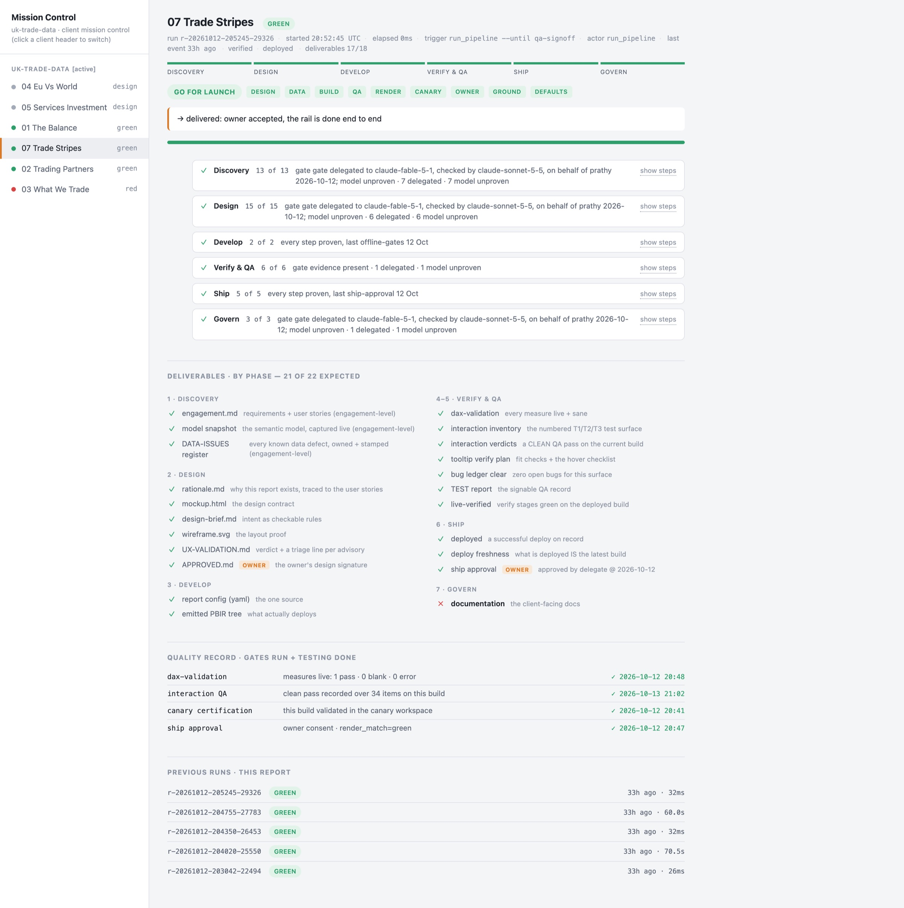

Agentic BI Development
Prathy Kamasani · Data Nova · Data Alchemy
01 / 55
• Welcome
• What it takes to trust an agent's BI work
About me
Prathy Kamasani
Solopreneur @ Data Nova, specialising in Microsoft Fabric and Power BI
Microsoft MVP
London Microsoft Fabric User Group organiser
Blogger, speaker and budding YouTuber
Remote first, lives in the UK and the Netherlands
data-nova.io
linkedin.com/in/prathy
Prathy Kamasani · Data Nova · Data Alchemy
02 / 55
• Solopreneur at Data Nova: Fabric and Power BI
• MVP, London Fabric user group, blog, talks, YouTube
• Everything else is on LinkedInThis session
Agentic BI Development
Letting AI agents build your Fabric semantic models and reports
An AI agent can build a real semantic model and report from a written spec, if you know how to brief it and how to check its work.
The interesting part is not the prompt. It is a spec it can act on without guessing, a quality bar set before it starts, and a proper review of what it built.
Prathy Kamasani · Data Nova · Data Alchemy
03 / 55
• An agent can build a real model and report from a spec
• What makes it reliable: a clear spec, a bar set before it starts, a proper review
• You leave knowing what to checkHands up
Who uses AI for anything: recipes, holiday plans, emails?
Prathy Kamasani · Data Nova · Data Alchemy
04 / 55
• Show of hands: AI for anything at all
• Most hands go upHands up
Who uses AI for anything: recipes, holiday plans, emails?
Who uses it for BI work?
Prathy Kamasani · Data Nova · Data Alchemy
05 / 55
• Now: AI in your BI work
• Fewer hands. That gap is todayAgenda
01
What is BI development?
Six steps from a question to a trusted report
02
Working with AI
Context, skills, rules, algorithms, loops, hooks, gates, MCP
03
Agent roles
Operator, builder, orchestrator, and you
04
Building the trade balance report
Chat, Fabric skills, MCP, my setup, full delegation
05
How I built the tool
Specs, engine, tests, prompts, deliverables
06
Cost and limits
Time, tokens, and what still needs a person
Prathy Kamasani · Data Nova · Data Alchemy
06 / 55
• Six parts
• Concepts first, then one brief through different tools, then how I built mine
• Last: cost, and what still needs a person01
What is BI development?
Six steps, and most of the time is not in the visuals.
Prathy Kamasani · Data Nova · Data Alchemy
07 / 55
• Before agents: what the job is01 · BI development
From a question to a trusted report
01
Discovery
Users, questions, acceptance criteria
02
Design
Layout, sketch, mockup
03
Build
Model changes, pages, visuals, theme
04
Test
Numbers, render, interaction
05
Deploy
Workspace, binding, refresh
06
Govern
Sign-off, audit trail, changes
Prathy Kamasani · Data Nova · Data Alchemy
08 / 55
• Six steps, with or without an agent
• Ask who does each one today
• Discovery, Test and Govern are where trust is earned, and where agents are weakest
• Most of the time is not in Build02
Working with AI
A capable graduate on day one
Prathy Kamasani · Data Nova · Data Alchemy
09 / 55
• An agent can help with every step
• First: what kind of colleague are we handing work to02 · Working with AI
Treat it like a new graduate
Knows a lot
DAX, Power BI, Fabric, public documentation
Not how you work
Your model, your names, your rules, your sign-offs
So you give it
Context, recipes, limits, and someone who checks
Prathy Kamasani · Data Nova · Data Alchemy
10 / 55
• Knows the tools and the public docs
• Does not know your model, your names, your sign-offs
• So you tell it, give it recipes, set limits, check its work02 · Example 1
Plain chat
Setup
Claude Code, no skills, no access to the model
Pro
Zero setup, fast for DAX
Con
Guesses table and column names
Prathy Kamasani · Data Nova · Data Alchemy
11 / 55
• What most of us do today. P to play
• No skills, no access to the model
• First prompt invents table names. With the schema pasted, it gets them right02 · Example 1
Without the schema, then with it
Prompt 1: no model
Trade Balance =
SUM('Trade'[Exports]) - SUM('Trade'[Imports])Prompt 2: real names pasted in
Trade Balance =
VAR Exports =
CALCULATE(
SUM('Trade Total Monthly'[Value GBP Millions]),
Flow[Direction] = "Export"
)
VAR Imports =
CALCULATE(
SUM('Trade Total Monthly'[Value GBP Millions]),
Flow[Direction] = "Import"
)
RETURN
Exports - ImportsPrathy Kamasani · Data Nova · Data Alchemy
12 / 55
• Left: invented names. 'Trade'[Exports] does not exist
• Right: real names, after I pasted the schema
• It works, but I pasted it by hand, and it goes stale02 · Example 1: Plain chat
What it changed
What you get: text to paste
Trade Balance =
VAR Exports =
CALCULATE(SUM('Trade Total Monthly'[Value GBP Millions]),
Flow[Direction] = "Export")
VAR Imports =
CALCULATE(SUM('Trade Total Monthly'[Value GBP Millions]),
Flow[Direction] = "Import")
RETURN Exports - Imports
Balance Card Colour =
IF([Trade Balance] >= 0, "#2E7D32", "#C62828")The model
0
changes
It cannot reach the model
The report
None. Two measures as text, to paste in by hand.
Prathy Kamasani · Data Nova · Data Alchemy
13 / 55
• Model: nothing. It cannot reach it
• Report: none. DAX as text, the rest by hand
• Fine for one measure02 · Working with AI
How chat differs from an agent
Chat: once through
You ask
A measure for the balance
It answers
From what it has seen before
You paste it in
And find out if it works
Agent: a loop
Plan
Which table holds exports?
Act with tools
Reads the model, runs a DAX query
Observe the result
Compares the figure with the source
Try again, or stop
Fixes and reruns, or hands back
You approve before it ships
Chat answers once. An agent checks its own work, and you check the agent.
Prathy Kamasani · Data Nova · Data Alchemy
14 / 55
• Chat answers once
• An agent loops: plan, act with tools, check the result, go again
• It can fix its own mistakes, and build on them
• The loop needs a gate. That is you02 · Working with AI
The building blocks
Context
Skills
Rules
Algorithms
Loops
Hooks
Gates
MCP
Prathy Kamasani · Data Nova · Data Alchemy
15 / 55
• Eight ways to tell an agent how you work
• Most people know two or three
• Next: what kind each one is02 · Working with AI
What kind each one is
| Block | Kind | What it does |
|---|---|---|
| Context | Advisory | Standing rules for every session |
| Skills | Advisory | A repeatable recipe for one job |
| Rules | Advisory | What good looks like, in words |
| Algorithms | Structure | The steps of each phase |
| Loops | Blocking | Repeat until a check passes |
| Hooks | Blocking | Block one action, on an event |
| Gates | Blocking | No sign-off, no next phase |
| MCP | Reach | Live access to tools and data |
Prathy Kamasani · Data Nova · Data Alchemy
16 / 55
• Advisory: it can skip them
• Structure: algorithms set the order of the work
• Blocking: loops, hooks, gates. It cannot walk past them
• MCP is reach, not control02 · Working with AI
What each one does
| Block | Kind | What it does |
|---|---|---|
| Context | Advisory | Standing rules for every session |
| Skills | Advisory | A repeatable recipe for one job |
| Rules | Advisory | What good looks like, in words |
| Algorithms | Structure | The steps of each phase |
| Loops | Blocking | Repeat until a check passes |
| Hooks | Blocking | Block one action, on an event |
| Gates | Blocking | No sign-off, no next phase |
| MCP | Reach | Live access to tools and data |
Prathy Kamasani · Data Nova · Data Alchemy
17 / 55
• One line each
• Where each one lives in my setup comes later02 · Working with AI
Advisory, hook or gate?
Advisory
Context, skills, rules
The agent decides whether to follow them. Nothing fails if it does not.
Example
A line in CLAUDE.md: never name a client
Hook
Fires on an event
A commit or an edit. It blocks that one action.
Example
An edit to the engine from a report branch
Gate
A checkpoint in the flow
No evidence or signature, no next phase.
Example
No signed design, no build
An agent edited the engine from a report branch. Now a hook blocks the edit.
Prathy Kamasani · Data Nova · Data Alchemy
18 / 55
• Advisory: it decides. Hook: blocks one action. Gate: no evidence, no next phase
• Real story: an agent changed the engine from a report branch
• A rule in the prompt was not enough. A hook fixed it02 · Working with AI
An algorithm for each phase
01 · Discovery
Discovery
13
steps
Requirements, stories, feasibility, profile, proof points
Discovery gate
02 · Design
Design
15
steps
Contract, layout, sketch, visuals, mockup
Design gate
03 · Build
Develop
2
steps
Build, offline gates
04 · Test
Verify and QA
6
steps
Canary, live render, render review, QA
QA passes
05 · Deploy
Ship
5
steps
Ship approval, client deploy, deliverable pack
Ship approval
06 · Govern
Govern
3
steps
Audit trail, tidy, owner acceptance
Owner acceptance
Prathy Kamasani · Data Nova · Data Alchemy
19 / 55
• 44 steps across six phases, each one written down
• The labels map back to the six steps
• Five gates, named on the cards03
Agent roles
Operator, builder, orchestrator, and you
Prathy Kamasani · Data Nova · Data Alchemy
20 / 55
• Who does what once the blocks are in place03 · Agent roles
Four roles
Operator
Runs the tool on a brief
Writes only the deliverables. Logs what the tool cannot do.
Builder
Changes the tool
On its own branch, with tests. You review each change.
Orchestrator
Plans and hands out work
Sends each decision to a delegate and a checker, in order.
You
Signs the gates
Decides what may be delegated. Keeps the client deploy unless you grant it.
Prathy Kamasani · Data Nova · Data Alchemy
21 / 55
• Operator runs the tool and writes only the deliverables
• Builder changes the tool, on a branch, with tests
• Orchestrator hands out decisions in order
• You decide what can be delegated03 · Agent roles
Who does what, step by step
| Step | The agent | You |
|---|---|---|
| Discovery | Drafts user stories from the requirements | Sign off the requirements |
| Design | Profiles the model, drafts the layout and mockup | Sign the design before it builds |
| Build | Writes the model changes and the report files | Review the model changes |
| Test | Runs data, render and layout checks | Click what automated QA cannot |
| Deploy | Deploys through a gated pipeline | Approve the release |
| Govern | Records who approved what, and when | Accept the result |
Prathy Kamasani · Data Nova · Data Alchemy
22 / 55
• The same six steps, split by who does the work
• The agent drafts, builds, checks, deploys and records
• You sign off, review and accept03 · Agent roles
How a report gets made
Requirement
YouDrafts and improves it
OperatorApprove or question
GateBuilds and checks
OperatorTest deploy (canary)
OperatorClient deploy
YouA question sends it back to the operator
Alongside
Tool cannot do it
OperatorGap logged
OperatorFix on a branch
BuilderReview the change
YouPrathy Kamasani · Data Nova · Data Alchemy
23 / 55
• Left to right: requirement to client deploy
• A question at the gate sends it back
• Underneath: a gap gets logged, a builder fixes it, I review03 · Agent roles
Who signs the gates?
Human gate
You sign four gates
Discovery, design, ship and acceptance. QA is a check that runs. Slow, and you are always in the loop.
Prathy Kamasani · Data Nova · Data Alchemy
24 / 55
• Human gate: I sign four gates
• QA is a check that runs
• Safe, but I am in the loop all day03 · Agent roles
Who signs the gates?
Human gate
You sign four gates
Discovery, design, ship and acceptance. QA is a check that runs. Slow, and you are always in the loop.
Full delegation
A second model decides. At a gate, a third model checks.
The client deploy stays yours unless you grant it. You read the decisions afterwards.
Prathy Kamasani · Data Nova · Data Alchemy
25 / 55
• Full delegation: another model decides, a third checks the gates
• The client deploy stays mine unless I grant it
• In my runs the deciding model was the drafter's own. The tool now catches that04
Building the trade balance report
One brief through different tools. Where a tool did not get it, the slide says so.
Prathy Kamasani · Data Nova · Data Alchemy
26 / 55
• One brief through different tools, then full delegation04 · Examples
UK trade, the balance
The brief given to Fabric skills and MCP
What to build
Balance card
Changes colour from surplus to deficit
Monthly trend
Exports, imports and the balance
Breakdown
By partner country or commodity
Slicer
Switches the trend between measures
Also in the brief
Who it is forThe model, its tables and its rulesOne page, theme colours, native visualsWhat is out of scopeWhat to hand back, with evidenceAsk before guessing
Done means
£937.0bn
exports
£980.4bn
imports
12 months to March 2026, published figures
Card colour from a measure, not a fixed colour
The slicer changes the plotted measure
Every field it uses exists in the model
Prathy Kamasani · Data Nova · Data Alchemy
27 / 55
• The brief: four things to build, three done checks
• The figures to match: £937.0bn exports, £980.4bn imports
• Chat got one prompt. Full delegation got a new brief04 · Example 2
Fabric skills
Setup
Microsoft's Fabric skills, same brief
Pro
Real file formats, a draft in minutes
Con
Advice the agent can skip, and no record of who approved
Prathy Kamasani · Data Nova · Data Alchemy
28 / 55
• Microsoft's Fabric skills. P to play, 12 times speed
• Real file formats, a draft in minutes
• Advisory and opt-in04 · Example 2: Fabric skills
What it changed

The model
0
changes
It read the model with DAX queries and wrote nothing
The report
UK Trade Balance, published to folder 02. Brief: £937.0bn exports. Built: 30.3K, all years. One of four done checks.
Prathy Kamasani · Data Nova · Data Alchemy
29 / 55
• Model: nothing written
• Report: published when asked, on the DirectLake model
• One of four checks met: all-years totals, empty partners chart04 · Example 3
MCP
Setup
GitHub Copilot in VS Code, with Microsoft's Power BI authoring MCP
Pro
Reads the real model
Con
Can change the model with your sign-in, and nothing records it. This run was read only.
Prathy Kamasani · Data Nova · Data Alchemy
30 / 55
• Copilot in VS Code with Microsoft's Power BI MCP. P to play
• It read the real model and got the figures right04 · Example 3: MCP
What it changed
No report
PBIP files on the laptop. Copilot could not publish them.
The model
0
changes
Read only: it could not add the field parameter the slicer needs
The report
None by Copilot. It wrote PBIP files on the laptop. I published them myself: next slide.
Prathy Kamasani · Data Nova · Data Alchemy
31 / 55
• Model: nothing. The connection was read only
• Report: PBIP files on the laptop. It could not publish
• With a writable connection it can change the model, and nothing asks you first04 · Example 3: MCP
Publishing the MCP report

As built
The Service refused it
Microsoft's validator, 5 errors:
No
.platform fileNo schema line in the
.pbipCard colours set as theme colours, not hex (2)
A setting
report.json does not allowAfter one fix
I removed the setting by hand and it published. Every visual is empty, with or without filters.
Prathy Kamasani · Data Nova · Data Alchemy
32 / 55
• As built, the Service refused it. Five validator errors
• One line removed by hand, and it published
• Every visual is empty: right numbers, a report that does not work04 · Example 4
My setup
Live demo
Two steps in the terminal. A check stops a report whose design was not approved. Then one command builds the report and runs all the checks.
Setup
My skills, scripts, gates, and sign-offs
Pro
Tested, gated, with an audit trail
Con
Upfront cost, covers only what I encoded
Prathy Kamasani · Data Nova · Data Alchemy
33 / 55
• My setup, live in the terminal
• First: a check stops a report whose design was not approved
• Then one command builds the report and runs every check04 · Example 4
Mission Control

What it shows
Every page
Its phase, and green or red
The rail
44 steps over six phases, with the evidence for each
Every gate
Who decided it, and which model
Go or no-go
One call per station before a release
Prathy Kamasani · Data Nova · Data Alchemy
34 / 55
• Where every page stands, in one view
• The rail: 44 steps, the evidence for each, who decided each gate
• Open it live: python3 scripts/mission_control.py serve, then the button
• Page 07 reads go for launch04 · Example 4: My setup
What it changed

The model
19
measures added
Plus 3 calculated columns, each verified on the live model
_Verdict_Colour Balance_Thesis Sentence+16 more
The report
The Balance, built earlier on the same model. Against this brief: no slicer, no breakdown.
Prathy Kamasani · Data Nova · Data Alchemy
35 / 55
• 19 measures and 3 columns, each verified on the live model
• The Balance was built before this brief, on the same model
• Against this brief: no slicer, no breakdown04 · Example 5
Full delegation
Setup
A new brief on the same model, every decision delegated
Pro
Brief to client deploy, no questions
Con
5 hours, 10 engine gaps
Prathy Kamasani · Data Nova · Data Alchemy
36 / 55
• A new brief, every decision delegated. P to play
• Discovery gate at 37 minutes, design gate at 62, first canary at 68
• Engine limits logged, not patched: 10 gaps04 · Example 5: Full delegation
What it changed

The model
16
measures added
Plus 2 calculated columns, each verified on the live model
_Stripe Colour_Stripes Headline_Stripes Month Count+13 more
The report
Trade stripes, deployed to the client workspace. QA 34 of 34.
Prathy Kamasani · Data Nova · Data Alchemy
37 / 55
• 16 measures and 2 columns, each verified on the live model
• Trade stripes: 315 months on one page
• Client workspace, QA 34 of 3404 · Examples
The five, compared
| Approach | Sees the model | Can be stopped | Records decisions | Report against the brief |
|---|---|---|---|---|
| Chat | No | No | No | No, DAX as text |
| Fabric skills | Yes, it queries the model | No | No | Published, 1 of 4 checks |
| MCP | Yes, live | No | No | No, visuals empty |
| My setup | Yes, checked against live | Yes, hooks and gates | Yes, every decision | Earlier build, same model |
| Full delegation | Yes, checked against live | Yes, hooks and gates | Yes, every decision | Yes, its own brief, QA 34 of 34 |
Prathy Kamasani · Data Nova · Data Alchemy
38 / 55
• Four questions for each approach
• Only my setup can be stopped and records its decisions
• Full delegation met its own brief; The Balance predates this one
• The upfront cost is real05
How I built the tool
Specs first, then the engine, then the checks
Prathy Kamasani · Data Nova · Data Alchemy
39 / 55
• How my setup is built, so you can build your own05 · How I built the tool
How the tool fits together
Specs
19 written algorithms
Engine
One generator
Report files
Checked against Microsoft's schemas
Checks
Hooks, gates and the pipeline
Deploy
Only through the pipeline
What feeds the engine
Knowledge
Visuals, tricks, gotchas
Microsoft tools
CLI validator, sample report
Skills
9 recipes for agents
Engagement
Brief, model, decisions
A fix goes in the spec or the engine, never in a report file.
Prathy Kamasani · Data Nova · Data Alchemy
40 / 55
• Specs, then the engine, then checks, then deploy
• Knowledge, Microsoft's tools, skills and the engagement feed the engine
• A fix goes in the spec or the engine, never in a report file05 · How I built the tool
The building blocks, in my setup
| Block | Kind | What it does | In my setup |
|---|---|---|---|
| Context | Advisory | Standing rules for every session | CLAUDE.md, AGENTS.md |
| Skills | Advisory | A repeatable recipe for one job | .claude/skills/ (9) |
| Rules | Advisory | What good looks like, in words | PRINCIPLES.md |
| Algorithms | Structure | The steps of each phase | algorithms/ (19) |
| Loops | Blocking | Repeat until a check passes | render-fix and QA loops |
| Hooks | Blocking | Block one action, on an event | pre-commit (29), edit hooks |
| Gates | Blocking | No sign-off, no next phase | the rail: 44 steps |
| MCP | Reach | Live access to tools and data | none: REST and XMLA queries |
Prathy Kamasani · Data Nova · Data Alchemy
41 / 55
• The same table, plus where each one lives
• Open two or three in VS Code05 · How I built the tool
Testing in five layers
| Layer | Proves | How |
|---|---|---|
| 0 · Repo | The engine still behaves | About 3,100 tests on every push |
| 1 · Contract | The config matches the design | Blocking rules, Microsoft's validator |
| 2 · Data | Every measure resolves, with plausible values | Queried live after each deploy |
| 3 · Render | Every text whole, the page reviewed | Live page measured, reviewed by another model |
| 4 · Interaction | Clicks and hovers do what was promised | A headless QA runner, a person as fallback |
Prathy Kamasani · Data Nova · Data Alchemy
42 / 55
• Five layers, from the repo to the interactions
• Each catches what the layer before cannot05 · How I built the tool
Design rules
The design order
0The surface: report, dashboard or app
1The person and their job
2Flow and empty states
3The canvas, then fixed
4Layout: one hero, the rest quiet
5Interaction: remove what you can
6Accessibility
7Data honesty
8Critique: cut what does not serve the job
Fails the build
Every text whole in the live render
No em dashes in visible copy
Warns only
Text contrast
Prathy Kamasani · Data Nova · Data Alchemy
43 / 55
• The order every page follows: the person first, pixels last
• Two checks block a build. Contrast is advisory05 · How I built the tool
Three prompts
Operator
New page for uk-trade-data, report name "UK Trade - Trade stripes". The brief is below. You are the operator: run the tool and write only under clients/. When the tool cannot do something, log a gap, use the nearest supported option, and carry on. Never ask me.
What it stops
The build session editing the engine, with a hook behind it
Builder
Fix this in the engine, never in a report file. Reproduce it, find the root cause, write the spec first if the behaviour has none, add a test that fails without the fix, and open a pull request. Do not merge.
What it stops
A fix in a report file that the next build overwrites
Architecture
Before you build anything new: is there a spec for it? If not, write the algorithm first, then the engine, then the check that enforces it. One generator, no second path.
What it stops
A second way of doing the same thing
Prathy Kamasani · Data Nova · Data Alchemy
44 / 55
• Shortened from the real ones
• Each one guards against one mistake05 · How I built the tool
Deliverables for one report
Report
On the canary and in the client workspace
Design contract
Challenged by a second model, then decided
Mockup
Drawn from a sample of live data
Design brief
Acceptance tests for every element
Decision records
16, each with its reasoning
QA report
34 of 34 items passed
Deliverable pack
Walkthrough, measures, proof points
Report guide
Plain English, for the reader; shown next
Prathy Kamasani · Data Nova · Data Alchemy
45 / 55
• Everything one run hands over
• All in the engagement folder05 · How I built the tool
The report guide

For the reader
Not for the people who built it
Matches gov.uk
Every figure, to within 0.005%
Explains the design
What it shows, and why it looks the way it does
Prathy Kamasani · Data Nova · Data Alchemy
46 / 55
• For the people who use the report
• Every figure matches gov.uk
• Open it with the button06
Cost and limits
Time, tokens, and what still needs a person
Prathy Kamasani · Data Nova · Data Alchemy
47 / 55
• The honest part06 · Cost and limits
What one delegated report cost
5 h 11 min
On the clock, brief to client deploy
3 h 9 min
Working, after a 2 hour usage-limit pause
0
Questions to me
225 million
Tokens read from cache, mostly the session re-reading its own history
6
Render fixes, none by me
10
Engine gaps logged, each fixed by a builder
Prathy Kamasani · Data Nova · Data Alchemy
48 / 55
• 5 h 11 on the clock, about 3 h of work
• Most tokens are the session re-reading its own history
• No questions to me. 10 gaps, all fixed by builders06 · Cost and limits
Limits
A new kind of page finds gaps
One page, ten engine gaps. The engine only does what it has been taught.
The deciding model was not the one asked for
The delegate asked for one model and was served the drafting model. The tool now records which model answered and blocks the drafter's.
Approvals reopen on harmless changes
A colour written as a hex instead of a name re-ran the whole sign-off chain.
Usage limits pause long runs
Two hours of waiting in a five-hour run.
Someone has to own the grant
What may be delegated, and the client deploy, stay with a person.
Prathy Kamasani · Data Nova · Data Alchemy
49 / 55
• A new kind of page finds gaps
• Prove which model decided
• Usage limits pause long runs
• Someone owns the grant06 · Cost and limits
Two bugs the checks missed
The slicer did not filter the chart
It was on the page and you could click it. The chart never changed.
Checks that passed
GatesDAXMockup match
How it was found
Clicking it in the Service.
The headline card clipped its figures
The figures were clipped inside the card.
Checks that passed
GatesDAXMockup match
How it was found
A person looked at the published page, after it had gone out three times.
No check read the published page.
Prathy Kamasani · Data Nova · Data Alchemy
50 / 55
• Both passed every check
• No check read the published page
• Now: a live text check, a render review, and QA that clicks06 · Cost and limits
Which approach, when
| Use | When | Trade-off |
|---|---|---|
| Chat | One measure or a quick question | No setup, nothing checked |
| Fabric skills | A prototype, or a report you will not rebuild | Real file formats, advice only |
| MCP | You need the live model's real answers | Real figures, but nothing stops a wrong write |
| My setup | Reports you rebuild, check and hand over | Upfront cost and upkeep |
Prathy Kamasani · Data Nova · Data Alchemy
51 / 55
• Chat for one measure
• Fabric skills for a prototype
• MCP for live answers
• My setup for reports you rebuild and hand over06 · Cost and limits
What to check, and what you do yourself
A check that runs
Measures resolve live
Every one, against the real model
Every text whole
Measured on the deployed page
It survives a refresh
Colours, sorts, and filters on new data
You
Write the brief
Who it is for, and what done means
Decide what to delegate
Which gates, and never the client deploy by default
Review what the builder changed
Every engine fix is yours to merge
Checks find the mistakes. You decide what done means.
Prathy Kamasani · Data Nova · Data Alchemy
52 / 55
• Left: checks that can run
• Right: yours, even under full delegationNext steps
Three things to try
01
Write down how you work
A CLAUDE.md or AGENTS.md: your model, your names, your rules
02
Add one hook
Block the one mistake you have made twice
03
Ask for a check before every deploy
And read it before you approve
Prathy Kamasani · Data Nova · Data Alchemy
53 / 55
• Write down how you work
• Add one hook
• Ask for a check before every deployThank you
Prathy Kamasani
Solopreneur @ Data Nova, specialising in Microsoft Fabric and Power BI
Microsoft MVP
London Microsoft Fabric User Group organiser
Blogger, speaker and budding YouTuber
Remote first, lives in the UK and the Netherlands
data-nova.io
linkedin.com/in/prathy
Prathy Kamasani · Data Nova · Data Alchemy
54 / 55
• Thank you. Questions
• data-nova.io and LinkedInFeedback
How was this session?
Scan the code to fill in the feedback form.
data-nova.notion.site
Prathy Kamasani · Data Nova · Data Alchemy
55 / 55
• Leave this up during questions
• Ask them to scan it now